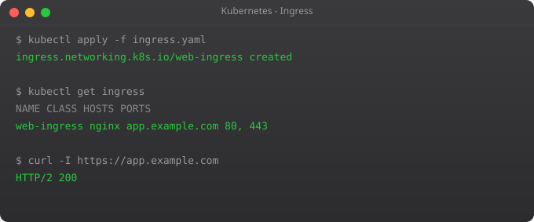

In Part 4, we used LoadBalancer services to expose applications. Each LoadBalancer service provisions a separate cloud load balancer — which means a separate public IP address and a separate monthly bill. If you have ten microservices, that is ten load balancers. In AWS, each ELB costs money every hour, even when no traffic is flowing.
Ingress solves this. An Ingress is an HTTP routing layer that sits in front of all your services. It has one IP address, one load balancer, and routes traffic to different services based on the hostname and URL path in the request. Ten services can share one Ingress — one IP, one load balancer, one bill. And Ingress also handles HTTPS termination, so your services do not need to deal with TLS themselves.
This is the production-grade way to expose web applications in Kubernetes. Let us set it up properly.
There are two parts to Kubernetes Ingress. First, the Ingress resource — a YAML object that defines the routing rules. Second, the Ingress Controller — an actual pod running in your cluster that reads those rules and configures a real reverse proxy (usually nginx) to implement them.
Kubernetes does not include a built-in Ingress Controller. You must install one. The most widely used is the nginx-ingress-controller, maintained by the Kubernetes community. Other options include Traefik, Contour, and cloud-specific controllers like the AWS ALB Ingress Controller.
# Enable the nginx ingress addon (installs the controller automatically)
minikube addons enable ingress
# Verify the controller is running
kubectl get pods -n ingress-nginx
# Wait until it shows Running status
kubectl wait --namespace ingress-nginx \
--for=condition=ready pod \
--selector=app.kubernetes.io/component=controller \
--timeout=120sLet us create two deployments and route traffic to them based on URL paths.
kubectl create deployment frontend --image=nginx
kubectl create deployment backend --image=httpd
kubectl expose deployment frontend --port=80
kubectl expose deployment backend --port=80apiVersion: networking.k8s.io/v1
kind: Ingress
metadata:
name: my-ingress
annotations:
nginx.ingress.kubernetes.io/rewrite-target: /
spec:
ingressClassName: nginx
rules:
- host: myapp.local
http:
paths:
- path: /
pathType: Prefix
backend:
service:
name: frontend
port:
number: 80
- path: /api
pathType: Prefix
backend:
service:
name: backend
port:
number: 80kubectl apply -f path-ingress.yaml
# Get the Minikube IP
minikube ip
# Add to /etc/hosts: 192.168.49.2 myapp.local
# Test routing
curl http://myapp.local/ # Goes to frontend (nginx)
curl http://myapp.local/api # Goes to backend (httpd)apiVersion: networking.k8s.io/v1
kind: Ingress
metadata:
name: multi-host-ingress
spec:
ingressClassName: nginx
rules:
- host: app.example.com
http:
paths:
- path: /
pathType: Prefix
backend:
service:
name: frontend
port:
number: 80
- host: api.example.com
http:
paths:
- path: /
pathType: Prefix
backend:
service:
name: backend
port:
number: 80This is where Ingress really shines in production. cert-manager automatically provisions free TLS certificates from Let's Encrypt and renews them before they expire. You annotate your Ingress and cert-manager handles everything.
kubectl apply -f https://github.com/cert-manager/cert-manager/releases/download/v1.14.0/cert-manager.yaml
# Wait for cert-manager to be ready
kubectl get pods -n cert-managerapiVersion: cert-manager.io/v1
kind: ClusterIssuer
metadata:
name: letsencrypt-prod
spec:
acme:
email: your@email.com
server: https://acme-v02.api.letsencrypt.org/directory
privateKeySecretRef:
name: letsencrypt-prod-key
solvers:
- http01:
ingress:
class: nginxapiVersion: networking.k8s.io/v1
kind: Ingress
metadata:
name: secure-ingress
annotations:
cert-manager.io/cluster-issuer: "letsencrypt-prod"
nginx.ingress.kubernetes.io/ssl-redirect: "true"
spec:
ingressClassName: nginx
tls:
- hosts:
- app.yourdomain.com
secretName: app-tls-cert # cert-manager creates this automatically
rules:
- host: app.yourdomain.com
http:
paths:
- path: /
pathType: Prefix
backend:
service:
name: frontend
port:
number: 80Once you apply this, cert-manager handles the Let's Encrypt ACME challenge, provisions the certificate, stores it in the specified Secret, and configures nginx to use it. Auto-renewal happens silently before expiry. No cron jobs, no manual steps — it just works.
The nginx Ingress Controller supports dozens of annotations to customise behaviour per Ingress resource.
metadata:
annotations:
# Redirect HTTP to HTTPS
nginx.ingress.kubernetes.io/ssl-redirect: "true"
# Set custom timeouts for long-running requests
nginx.ingress.kubernetes.io/proxy-read-timeout: "300"
nginx.ingress.kubernetes.io/proxy-connect-timeout: "300"
# Enable CORS
nginx.ingress.kubernetes.io/enable-cors: "true"
# Rate limiting
nginx.ingress.kubernetes.io/limit-rps: "10"
# Increase max upload size
nginx.ingress.kubernetes.io/proxy-body-size: "50m"
# Whitelist specific IPs
nginx.ingress.kubernetes.io/whitelist-source-range: "10.0.0.0/8"# Check Ingress status
kubectl get ingress
# Describe for events and configuration
kubectl describe ingress my-ingress
# Check the nginx controller logs
kubectl logs -n ingress-nginx deployment/ingress-nginx-controller
# Check the nginx configuration that was generated
kubectl exec -n ingress-nginx deployment/ingress-nginx-controller -- nginx -T | grep -A 20 "server_name myapp"Traffic is now flowing into your cluster properly, with HTTPS and intelligent routing. The next challenge is reliability. What happens when a pod is still starting but Kubernetes is already routing traffic to it? What if a pod needs 30 seconds to initialise before it can handle requests? In Part 9, we cover Health Checks and Probes — the mechanism that tells Kubernetes exactly when a pod is truly ready to receive traffic and when it is unhealthy and should be restarted.
A Service exposes pods at the TCP level. An Ingress is an HTTP routing layer sitting in front of multiple Services, routing by hostname and URL path. One Ingress replaces many LoadBalancer services, saving cost and complexity.
An Ingress Controller is the actual pod that implements Ingress rules by configuring a real reverse proxy (nginx, Traefik, etc.). Kubernetes defines the Ingress API but does not include a controller — you install one separately. Minikube includes nginx as an addon.
Install cert-manager, create a ClusterIssuer for Let's Encrypt, and annotate your Ingress with cert-manager.io/cluster-issuer. cert-manager automates certificate issuance and renewal completely — free and hands-off.
Yes. Define multiple host rules in one Ingress resource. Each host can have independent path routing and its own TLS certificate. This is far more cost-efficient than one LoadBalancer per service.
Routing traffic to different services based on the URL path. Example: /api goes to the API service, /uploads goes to a file service, everything else to the frontend. All under one hostname and one IP address.